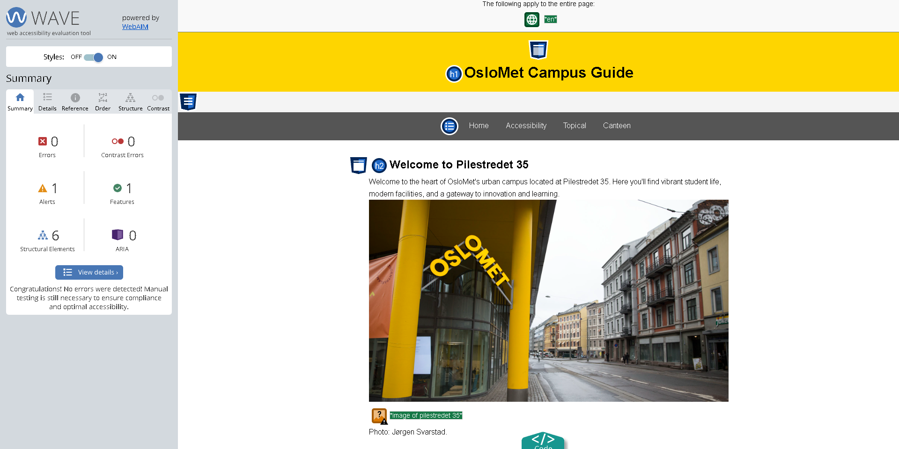

Acessibility Testing
What is the purpose of the accesibility test?
To ensure website accessibility for all individuals regardless of abilities or disabilities, we have utilized automated testing to gain insights and will discuss additional steps taken to achieve universal design enhancing the overall user experience.
Automated testing for Accesibility
The automated accesiblity test was performed using WAVE Evaluation Tool (https://wave.webaim.org/).
WAVE® is a suite of evaluation tools that helps authors make their web content more accessible to individuals with disabilities. WAVE can identify many accessibility and Web Content Accessibility Guideline (WCAG) errors, but also facilitates human evaluation of web content.
Testing process
We initiated the testing process by running the automated tool across all pages of our website. The tool provded us with a detailed report highlighting potential problem areas in our website. Here are a few screenshots below:
